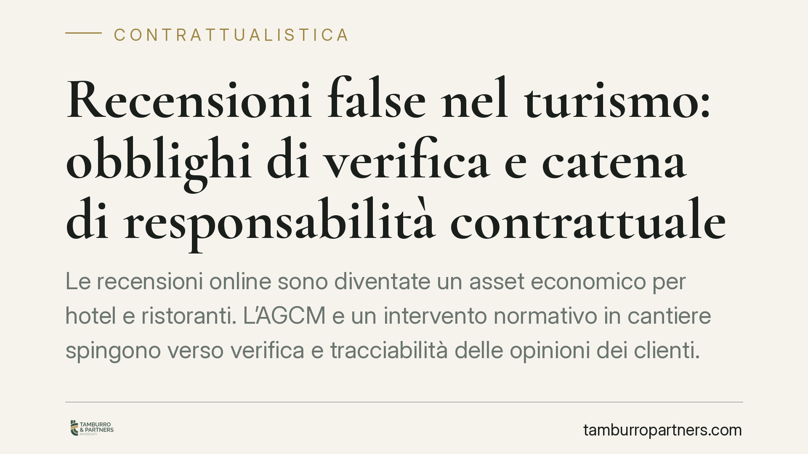

Recensioni false nel turismo: obblighi di verifica e catena di responsabilità contrattuale
Le recensioni online sono diventate un asset economico per hotel e ristoranti. L'AGCM e un intervento normativo in cantiere spingono verso verifica e tracciabilità delle opinioni dei clienti. Il nodo giuridico non è solo pubblicare recensioni veritiere, ma capire chi risponde quando la gestione è affidata a fornitori esterni o a piattaforme terze.

Il contesto: perché le recensioni sono un tema legale, non solo reputazionale
La valutazione media su una piattaforma incide direttamente sul fatturato di una struttura ricettiva o di un ristorante. Proprio per questo le recensioni sono entrate nel perimetro della disciplina sulle pratiche commerciali scorrette: una recensione falsa, pilotata o selezionata per nascondere il negativo non è un problema di marketing, ma una possibile violazione sanzionabile.
Una premessa di metodo. Nel dibattito circola il riferimento a una "legge annuale sulle PMI" (indicata come L. 34/2026, art. 20) che introdurrebbe obblighi di verifica e tracciabilità delle recensioni nel turismo. Allo stato, consigliamo cautela: finché un testo non è pubblicato e consolidato, non è prudente costruire scelte operative su una norma dai contorni incerti. Il quadro vincolante, oggi, è già un altro ed è pienamente operativo.
Inquadramento normativo
La base solida è il Codice del consumo (D.Lgs. 206/2005), artt. 20-23, che vieta le pratiche commerciali ingannevoli. In questa cornice rientrano la pubblicazione di recensioni inventate, l'acquisto di opinioni positive e la rimozione selettiva delle valutazioni negative.
Il tassello decisivo, spesso trascurato, è il D.Lgs. 26/2023, che ha recepito la cosiddetta Direttiva Omnibus e ha inserito nel Codice del consumo l'art. 22-bis. Questa disposizione impone al professionista che dà accesso a recensioni di indicare *se e come* garantisce che le opinioni pubblicate provengano da consumatori che hanno effettivamente acquistato o utilizzato il prodotto o servizio. In parallelo, il nuovo art. 23 qualifica come scorrette, tra l'altro, le condotte di chi dichiara che le recensioni sono autentiche senza adottare misure ragionevoli di verifica, e la pubblicazione di recensioni false.
Quanto agli orientamenti dell'AGCM richiamati per il settore turistico: gli estremi del provvedimento specifico sono da verificare sul testo ufficiale. Per un riscontro aggiornato si rinvia alla sezione dedicata alle pratiche commerciali scorrette del sito istituzionale AGCM, dove sono raccolti provvedimenti e segnalazioni in materia.
Implicazioni pratiche: chi risponde davvero
Il punto più delicato è l'imputazione della responsabilità. La nozione di "professionista" dell'art. 18 Cod. consumo è ampia: comprende chi agisce nell'esercizio della propria attività e, soprattutto, chiunque agisca "in nome o per conto" di esso. Questo significa che la responsabilità per una pratica scorretta tende a ricadere sul soggetto che ne trae il vantaggio economico, cioè l'impresa turistica o di ristorazione, anche quando la gestione materiale delle recensioni è stata esternalizzata.
Affidare a un'agenzia di web reputation o a un fornitore la raccolta e la moderazione delle opinioni non interrompe la catena di responsabilità. Se il fornitore gonfia le valutazioni o filtra i commenti sgraditi, l'impresa che beneficia di quel profilo migliorato resta il primo interlocutore dell'Autorità. Il contratto con il fornitore non è uno scudo: è, al più, lo strumento per distribuire internamente il rischio e organizzare le prove di diligenza.
Da qui due conseguenze concrete. La prima: i contratti con fornitori e piattaforme vanno riletti alla luce degli obblighi di verifica e trasparenza, non lasciati nella loro formulazione standard. La seconda: l'impresa deve poter dimostrare di aver adottato misure ragionevoli, perché la mera buona fede non basta a escludere la contestazione.
Cosa fare in concreto
- Mappate la catena contrattuale. Individuate ogni soggetto che tocca le recensioni (agenzie, software, piattaforme) e verificate che ogni contratto preveda obblighi espliciti di raccolta lecita, divieto di recensioni false e tracciabilità.
- Inserite clausole mirate. Prevedete obblighi di verifica dell'autenticità, divieto di moderazione selettiva, diritto di audit e manleva a carico del fornitore per le violazioni a lui imputabili.
- Formalizzate una policy interna sulle recensioni. Definite per iscritto come vengono sollecitate, pubblicate e gestite le opinioni, in coerenza con l'art. 22-bis Cod. consumo, e indicate pubblicamente se e come garantite l'autenticità.
- Conservate le evidenze. Tenete traccia degli acquisti collegati alle recensioni, delle comunicazioni con i fornitori e dei controlli svolti: sono gli elementi che dimostrano la diligenza in caso di contestazione.
- Monitorate gli aggiornamenti normativi. Verificate con regolarità l'evoluzione della disciplina e gli interventi AGCM, senza anticipare adempimenti basati su testi non ancora in vigore.
---
Contributo informativo a cura di Tamburro & Partners Avvocati. Non costituisce parere legale.
Ogni contratto ha il suo equilibrio.
Se vuoi una revisione delle clausole o una redazione su misura, scrivi allo studio. Ti rispondiamo entro un giorno lavorativo.